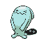

#202 WOBBUFFET

TYPE:
PSYCHIC
Pokédex Description
Pokémon Gold / Silver:
Hates light and shocks. If attacked, he inflates his body to increase his counterattack.
Pokémon Crystal:
In order for no one to see its black tail, it lives in a dark cave and only comes out at night.
Base Stats
| Health | Attack | Defense | Speed | At. Esp. | Def. Esp. |
|---|---|---|---|---|---|
| 190 | 33 | 58 | 33 | 33 | 58 |
Max Stats Level 50
| Health | Attack | Defense | Speed | At. Esp. | Def. Esp. |
|---|---|---|---|---|---|
| 250 - 296 | 38 - 84 | 63 - 109 | 38 - 84 | 38 - 84 | 63 - 109 |
Max Stats Level 100
| Health | Attack | Defense | Speed | At. Esp. | Def. Esp. |
|---|---|---|---|---|---|
| 490 - 583 | 71 - 164 | 121 - 214 | 71 - 164 | 71 - 164 | 121 - 214 |
Movements by Level
Level - Gold/Silver Crystal - Attack - Type - Power - Precision - PP - Description
1 - 1 - GHOST SAME DESTINY - - 100 - 5 - The enemy becomes weaker with you.
1 - 1 - NORMAL SACRED VEIL - - 100 - 25 - Avoid status problems.
1 - 1 - PSYCHIC MIRROR CLOTH - - 100 - 20 - Double a SPECIAL ATTACK.
1 - 1 - FIGHT COUNTER - - 100 - 20 - Returns a physical blow, duplicated.
1 - 1 - NORMAL SACRED VEIL - - 100 - 25 - Avoid status problems.
1 - 1 - PSYCHIC MIRROR CLOTH - - 100 - 20 - Double a SPECIAL ATTACK.
1 - 1 - FIGHT COUNTER - - 100 - 20 - Returns a physical blow, duplicated.
Movements by MT/MO
MT/MO - Attack - Type - Power - Accuracy - PP - Description
Pokédex Gold/Silver/Crystal By Professor Dog.